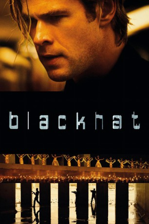
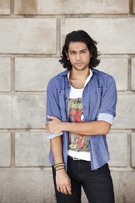
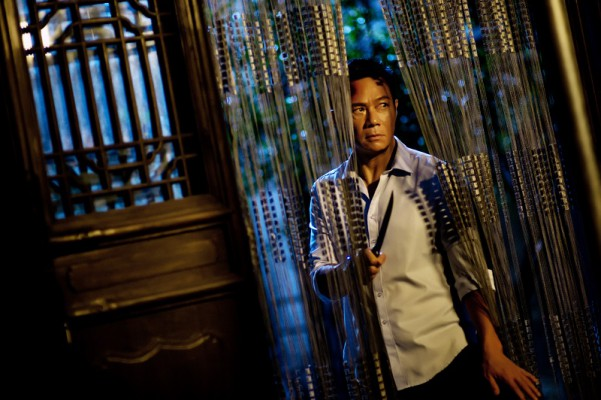

#1141 Blackhat
 gesehen am 11.11.2016
gesehen am 11.11.2016
 
 IMDB-Wertung: 5.4 / 10
IMDB-Wertung: 5.4 / 10  Metascore: 51
Metascore: 51 
Einst war Nicholas Hathaway ein berühmter Hacker, doch schon seit mehreren Jahren sitzt er im Gefängnis. Umso größer ist der Schock, als bei einem Cyber-Angriff auf die Börse von Chicago, welche die Weltwirtschaft an den Rand des Chaos’ führt, sein alter Code benutzt wird. Auf der Suche nach dem Drahtzieher des Angriffs macht ihm das FBI ein Angebot: Er kommt auf freien Fuß, wenn er die Ermittler bei der Suche nach dem Cyber-Terroristen unterstützt. Gemeinsam mit einer Spezialeinheit aus FBI und chinesischen Spezialisten macht er sich auf eine Katz- und Maus-Jagd, die ihn von Chicago über Kuala Lumpur und Hong Kong bis nach Jakarta führt. Dabei droht ihnen die Zeit davon zu laufen, denn der Terrorist plant bereits einen Angriff, bei dem es um mehr als nur Geld geht.
Jahr: 2015
Dauer: 133 Minuten
FSK: 16
Land: USA Studio: Universal PicturesTonspuren: DTS - ,
Untertitel: Deutsch, Englisch,
Auflösung: 1080p (1920x800) Größe: 8386 MB
Genre: Action, Krimi, Thriller
Regisseur:  Michael Mann
Michael Mann
Drehbuch: Morgan Davis Foehl
Soundtrack: Harry Gregson-Williams, Atticus Ross, Leopold Ross
Darsteller:
 Chris Hemsworth als Nick Hathaway
Chris Hemsworth als Nick Hathaway- Leehom Wang als Chen Dawai
- Wei Tang als Chen Lien
 Viola Davis als Carol Barrett
Viola Davis als Carol Barrett Holt McCallany als Mark Jessup
Holt McCallany als Mark Jessup Andy On als Alex Trang
Andy On als Alex Trang Ritchie Coster als Elias Kassar
Ritchie Coster als Elias Kassar- Christian Borle als Jeff Robichaud
 John Ortiz als Henry Pollack
John Ortiz als Henry Pollack Yorick van Wageningen als Sadak
Yorick van Wageningen als Sadak Brandon Molale als Sort Guard
Brandon Molale als Sort Guard- Danny Burstein als Associate Warden Jeffries
- Archie Kao als Shum
-  Abhi Sinha als Daniels
 Jason Butler Harner als George Reinker
Jason Butler Harner als George Reinker- Manny Montana als Alonzo Reyes
 Spencer Garrett als Gary Baker
Spencer Garrett als Gary Baker- Shi Liang als Lieutenant Colonel Zhao
- Sophia Santi als Mrs. Novo
- Victor Chi als Korean Waiter
- Peter Jae als Korean Thug
-  Siu-Fai Cheung als Chow
- Courtney Wu als Samuel Wu
 William Mapother als Rich Donahue
William Mapother als Rich Donahue- Frank Cutler als United Captain
- Michael Flores als Inmate
- Seth Adams als Computer Tech , uncredited
 Michael Bentt als Cab Driver , uncredited
Michael Bentt als Cab Driver , uncredited- Cheryl Dent als FBI Computer Tech , uncredited
- Sara Finley als FBI Agent , uncredited
- Tania Gunadi als (uncredited
- Jon Eric Hoffman als NSA Agent , uncredited
- Daniel Juhn als Korean Art Student , uncredited
- Kim Kendall als FBI Agent , uncredited
- Kaidy Kuna als Game show host , uncredited
- Wilfred Lopez als Cook , uncredited
- Dina Morrone als Italian Reporter , uncredited
- Kevin Norwood als NSA Worker , uncredited
- Lyn Quinn als Airplane Passenger , uncredited
- Ved Redic als Attorney , uncredited
- Neil Sandilands als Harbor Pilot , uncredited
- Fabiola Sicily als Jasmine , uncredited
 Alexander von Roon als Newsanchor , uncredited
Alexander von Roon als Newsanchor , uncredited- Tyson Chak als Tech
- Kan Mok als Major Yuan
- David Lee McKinney als Waiter
- Muscle Marquez als 18th Street Gangster
- Tommy Wong als Johnny Li
- Ivan Ngan als Yang Lin
- Adrian Pang als Keith Yan
Datei: X:\2015(A-F)\Blackhat (2015, FSK16, 1920x800).mkv seit 29.05.2015
Festplatte: HD 2015(A-Z)
 Es gibt insgesamt 143 Filme in der Gruppe '2015(A-F)'
Es gibt insgesamt 143 Filme in der Gruppe '2015(A-F)'